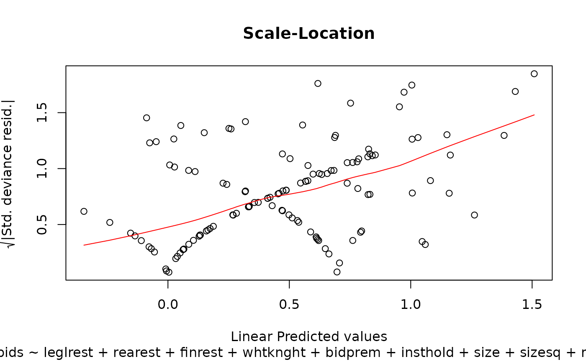
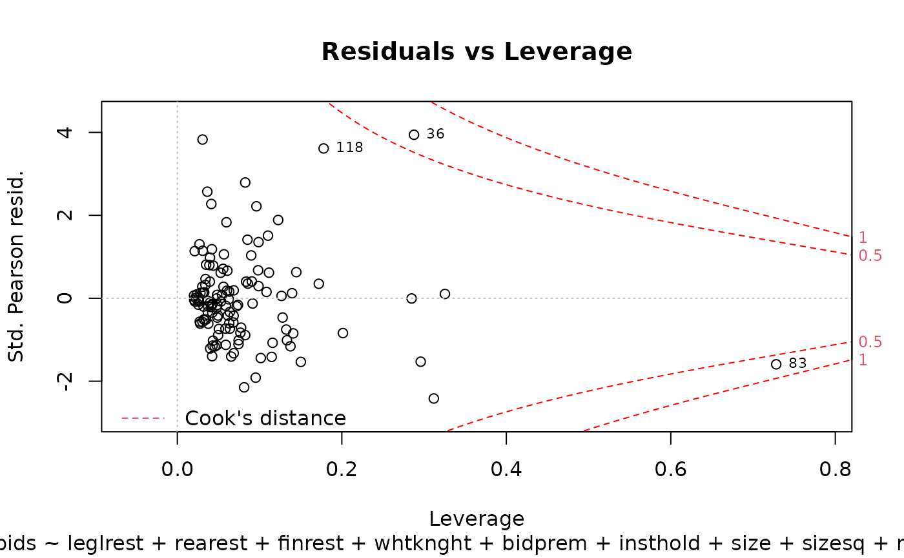

This data set gives the number of bids received by 126 US firms that were successful
targets of tender offers during the period 1978–1985, along with some explanatory
variables on the defensive actions taken by management of target firm, firm-specific
characteristics and intervention taken by federal regulators. The takeoverbids
data frame has 126 observations on 14 variables. The descriptions below are taken from
Sáez-Castillo and Conde-Sánchez (2013).
Usage
data(takeoverbids)Format
A data frame with 126 observations on 14 variables.
- bidprem
bid price divided by price 14 working days before bid
- docno
doc no
- finrest
indicator variable for proposed change in ownership structure
- insthold
percentage of stock held by institutions
- leglrest
indicator variable for legal defence by lawsuit
- numbids
number of bids received after the initial bid
- obs
Identifier
- rearest
indicator variable for proposed changes in asset structure
- regulatn
indicator variable for Department of Justice intervention
- size
total book value of assets in billions of dollars
- takeover
Indicator. 1 if the company was being taken over
- weeks
time in weeks between the initial and final offers
- whtknght
indicator variable for management invitation for friendly third-party bid
- sizesq
book value squared
Source
Journal of Applied Econometrics data archive: http://qed.econ.queensu.ca/jae/.
References
Cameron, A.C. and Johansson, P. (1997). Count Data Regression Models using Series Expansions: with Applications. Journal of Applied Econometrics 12 203–223.
Cameron, A.C. and Trivedi P.K. (1998). Regression analysis of count data, Cambridge University Press, https://cameron.econ.ucdavis.edu/racd/racddata.html chapter 5.
Croissant Y (2011) Ecdat: Datasets for econometrics, R Package, version 0.1-6.1.
Jaggia, S. and Thosar, S. (1993). Multiple Bids as a Consequence of Target Management Resistance Review of Quantitative Finance and Accounting 3, 447–457.
Examples
### Huang (2017) Page 371--372: Underdispersed Takeover Bids data
data(takeoverbids)
M.bids <- glm.cmp(numbids ~ leglrest + rearest + finrest + whtknght
+ bidprem + insthold + size + sizesq + regulatn, data = takeoverbids)
M.bids
#>
#> Call: glm.cmp(formula = numbids ~ leglrest + rearest + finrest + whtknght +
#> bidprem + insthold + size + sizesq + regulatn, data = takeoverbids)
#>
#> Linear Model Coefficients:
#> (Intercept) leglrest rearest finrest whtknght bidprem
#> 0.9896300 0.2678800 -0.1731800 0.0677440 0.4812800 -0.6848200
#> insthold size sizesq regulatn
#> -0.3678900 0.1793300 -0.0075823 -0.0375690
#>
#> Dispersion (nu): 1.75
#> Degrees of Freedom: 125 Total (i.e. Null); 116 Residual
#> Null Deviance: 182.3906
#> Residual Deviance: 131.2017
#> AIC: 382.1753
#>
summary(M.bids)
#>
#> Call: glm.cmp(formula = numbids ~ leglrest + rearest + finrest + whtknght +
#> bidprem + insthold + size + sizesq + regulatn, data = takeoverbids)
#>
#> Deviance Residuals:
#> Min 1Q Median 3Q Max
#> -2.71432 -0.70635 -0.07758 0.36084 3.05289
#>
#> Linear Model Coefficients:
#> Estimate Std.Err Z value Pr(>|z|)
#> (Intercept) 0.989630 0.435366 2.273 0.023020 *
#> leglrest 0.267879 0.122873 2.180 0.029248 *
#> rearest -0.173177 0.154779 -1.119 0.263197
#> finrest 0.067744 0.174403 0.388 0.697693
#> whtknght 0.481281 0.131721 3.654 0.000258 ***
#> bidprem -0.684822 0.307627 -2.226 0.026005 *
#> insthold -0.367886 0.346799 -1.061 0.288780
#> size 0.179325 0.047627 3.765 0.000166 ***
#> sizesq -0.007582 0.002485 -3.052 0.002276 **
#> regulatn -0.037569 0.130303 -0.288 0.773101
#> ---
#> Signif. codes: 0 ‘***’ 0.001 ‘**’ 0.01 ‘*’ 0.05 ‘.’ 0.1 ‘ ’ 1
#>
#> (Dispersion parameter for Mean-CMP estimated to be 1.752)
#>
#>
#> Null deviance: 182.39 on 125 degrees of freedom
#> Residual deviance: 131.20 on 116 degrees of freedom
#>
#> AIC: 382.1753
#>
plot(M.bids) # or autoplot(M.bids)



